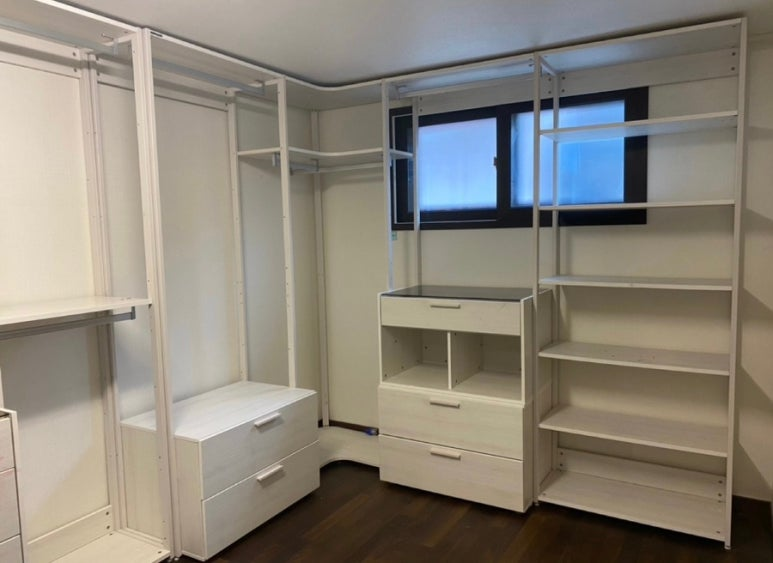
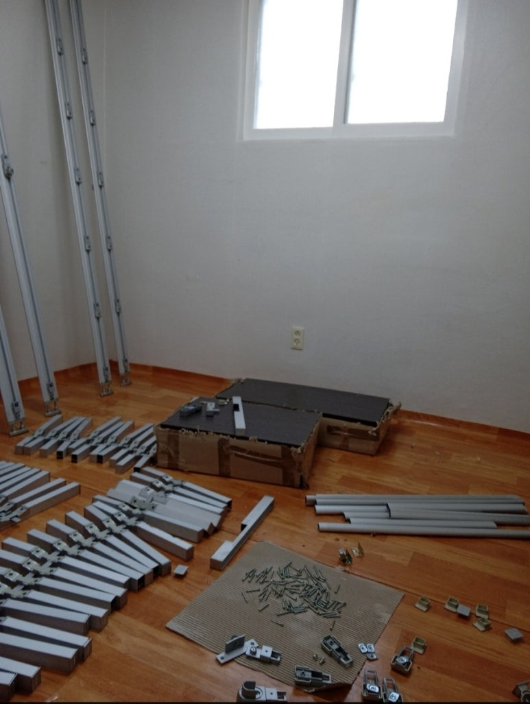
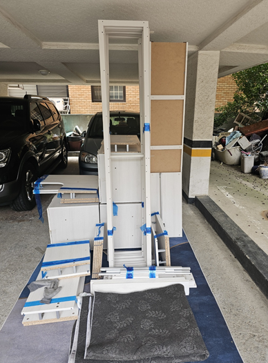
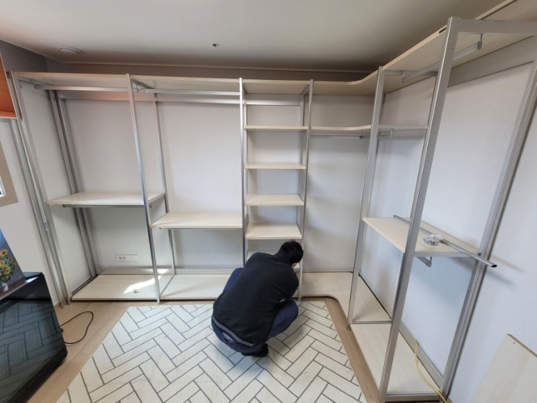
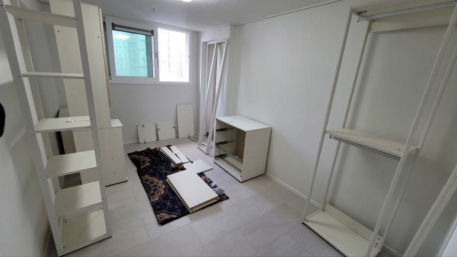
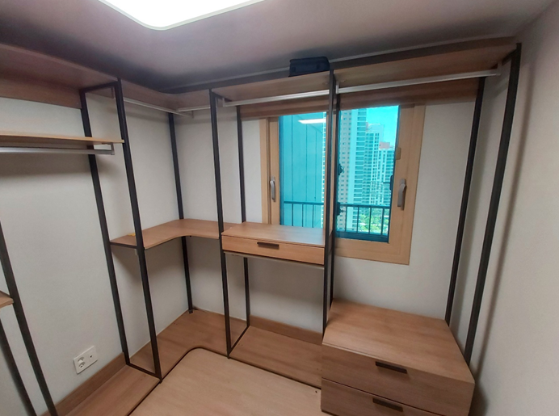
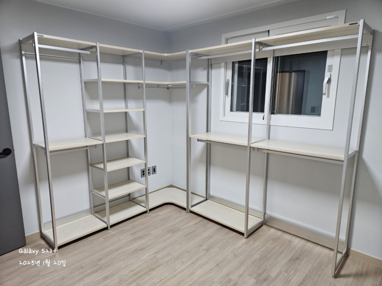
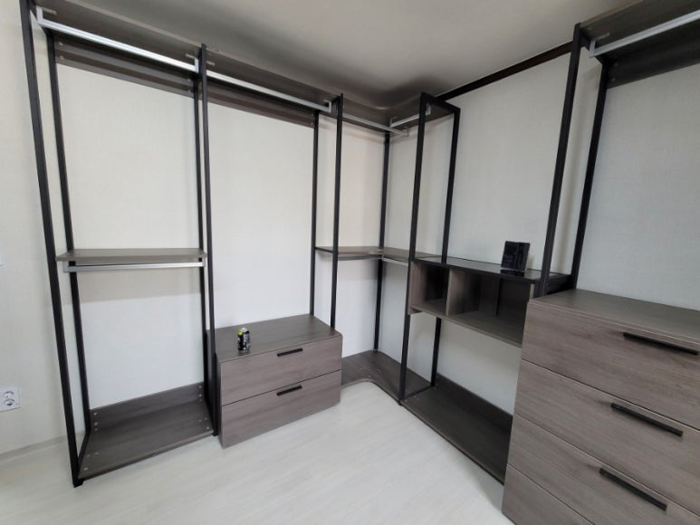
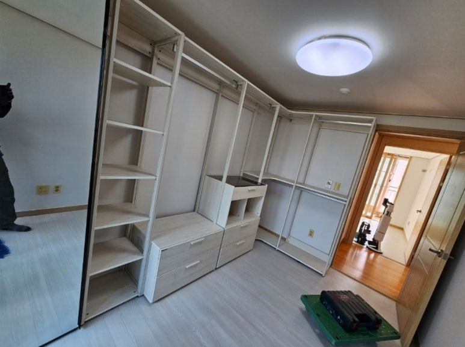
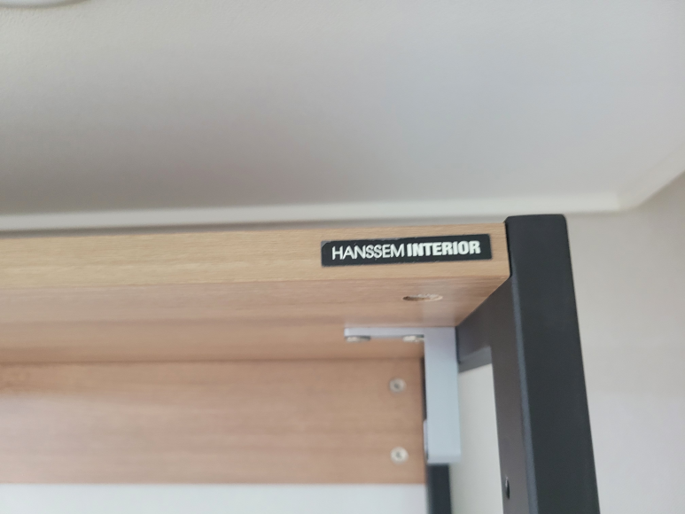

한샘 시스템행거 이전설치
드레스룸 해체부터 재조립까지
이사 가는 집에도 지금 쓰던 한샘 드레스룸을 그대로 쓰고 싶으신가요? 코니처는 한샘 시스템행거와 드레스룸을 해체해서 옮기고, 새 공간에 맞춰 다시 조립해 드리는 가구이전설치 업체예요. 드레스룸 해체와 재조립은 평균 10년 넘게 가구를 다뤄 온 지역 기사님이 직접 해요.

한샘 시스템행거·드레스룸 이전설치
3칸 기준 12만 원부터
표시된 금액은 최소 시작 금액이에요. 가구 크기와 수량, 이전 거리, 층수, 엘리베이터 사용 여부 등 작업과 현장 상황에 따라 금액이 달라져요. 정확한 금액은 사진을 보고 문자로 안내드려요.
현금가 기준이며, 카드 결제나 현금영수증이 필요하면 부가세가 별도예요.
문자 상담 신청하기한샘 시스템행거, 옮길 때 살펴야 할 것
한샘 시스템행거는 기둥을 세우고 그 사이에 선반과 행거봉, 서랍장을 끼워 만드는 구조예요. 장롱처럼 통째로 옮기는 가구가 아니라서, 이전설치할 때 확인할 부분이 따로 있어요.
- 부품 수가 많아요기둥, 선반, 행거봉, 브래킷, 서랍장까지 부품이 많아서 해체할 때 종류별로 정리해 두는 게 중요해요.
- 기둥 수평과 간격기둥이 기울면 선반이 기울고 행거봉이 빠질 수 있어요. 재조립할 때 기둥 수평과 간격을 맞추는 이유예요.
- 새 공간의 모양지금은 ㄱ자인데 새 집은 11자로 놓아야 하는 경우처럼, 공간 모양이 달라질 때가 많아요.
- 천장 높이기둥 길이는 천장 높이와 관계가 있어요. 새 드레스룸의 가로·세로 길이와 천장 높이를 함께 알려주세요.
한샘 드레스룸 이전설치 과정
-
해체
서랍장과 선반, 행거봉을 먼저 분리하고 마지막에 기둥을 해체해요.

-
포장과 운반
해체한 기둥과 선반을 포장해서 새 자리로 옮겨요. 이사도, 같은 집 안의 방간이동도 가능해요.

-
재조립
새 드레스룸에 기둥을 다시 세우고, 수평을 맞춘 뒤 선반과 행거봉을 걸어요.


-
서랍장 배치와 마무리
서랍장과 소품 선반을 제자리에 놓고 흔들림이 없는지 확인한 뒤 마무리해요.

드레스룸 작업 순서와 방법은 가구 구성과 현장 상황에 따라 기사님과 상담 후 진행돼요.
새 집 드레스룸 구조가 달라도 될까요?
시스템행거는 기둥과 선반으로 나뉘는 구조라서, 구성에 따라 배치를 바꿔 설치할 수 있는 경우도 있어요. 예를 들어 ㄱ자로 쓰던 드레스룸을 11자로 나누거나, 칸 수를 줄여 작은 방에 맞추는 식이에요. 다만 기둥 길이와 선반 폭이 정해져 있어서 모든 구조로 바꿀 수 있는 건 아니에요. 지금 드레스룸 사진과 새 공간의 치수를 보내주시면 가능한 배치를 상담해 드려요.
드레스룸 견적에 필요한 정보
- 드레스룸 전체 사진모서리까지 전체가 나오게 찍어 주세요. 칸이 많으면 두세 장으로 나눠 찍어도 좋아요.
- 칸 수와 구성기둥 사이 칸이 몇 개인지, 서랍장이 몇 개인지 알려주세요.
- 이동 정보출발지와 도착지, 대략적인 거리, 각 집의 층과 엘리베이터 유무를 알려주세요.
- 새 드레스룸 치수설치할 공간의 가로·세로 길이와 천장 높이를 알려주세요.
드레스룸 비우기와 준비
행거에 걸린 옷과 선반 위 물건, 서랍 속 짐은 미리 비워 주세요. 옷을 걸어 둔 채로는 해체를 시작할 수 없어요. 새 집에서는 드레스룸 바닥을 비워 두시면 기둥을 세우기가 수월해요.
드레스룸 이전설치가 필요한 경우
다시 조립한 드레스룸




최근 한샘 시스템행거·드레스룸 작업 지역
수도권이라면 어느 지역이든 드레스룸 이전설치로 찾아가요.
- 삼송한샘 드레스룸 행거 · 해체 후 이전 재설치
- 논현한샘 드레스룸 시스템행거 · 이사 분리 조립
- 안성한샘 드레스룸 · 해체 이전 재설치
- 수원·서초한샘 시스템행거 · 이전 재설치
- 송파·오산한샘 드레스룸 · 이사 이전설치
- 은평·고양한샘 11자 드레스룸 · 시스템행거 이전설치
- 광교신도시한샘 스탠드형 시스템행거 · 이전 재설치
- 중구·용산한샘 드레스룸 · 해체 재조립 재설치
- 식사풍동지구한샘 드레스룸 · 해체 재조립 이동
자주 묻는 질문
드레스룸을 옮기는 날 바로 다시 조립되나요?
네, 같은 날 해체하고 새 공간에 다시 조립할 수 있어요. 칸 수가 많거나 거리가 멀면 일정을 상담해서 정해요.
칸 수가 많으면 비용이 달라지나요?
네, 표시된 금액은 3칸 기준 시작 금액이에요. 칸 수와 서랍장 개수, 현장 상황에 따라 달라져서 사진을 보고 안내드려요.
드레스룸 일부만 옮길 수도 있나요?
네, 필요한 칸만 옮기는 경우도 상담할 수 있어요. 옮길 부분을 사진에 표시해서 보내주세요.
장롱과 드레스룸을 함께 옮길 수 있나요?
네, 장롱이나 침대 같은 다른 가구도 함께 문의하실 수 있어요. 가구마다 사진을 보내주세요.
드레스룸 이전 비용은 칸 수만 보나요?
칸 수와 서랍장 수에 더해 이동 거리, 층수, 엘리베이터 사용 여부까지 함께 봐요. 드레스룸 사진과 새 공간 치수를 보내주시면 금액을 안내드려요.
드레스룸 이전 견적, 문자로 물어보세요
지금 드레스룸 사진과 새 공간 치수를 보내주세요. 오전 7시~오후 6시에 확인하고 답장드려요.
문자 상담 신청하기